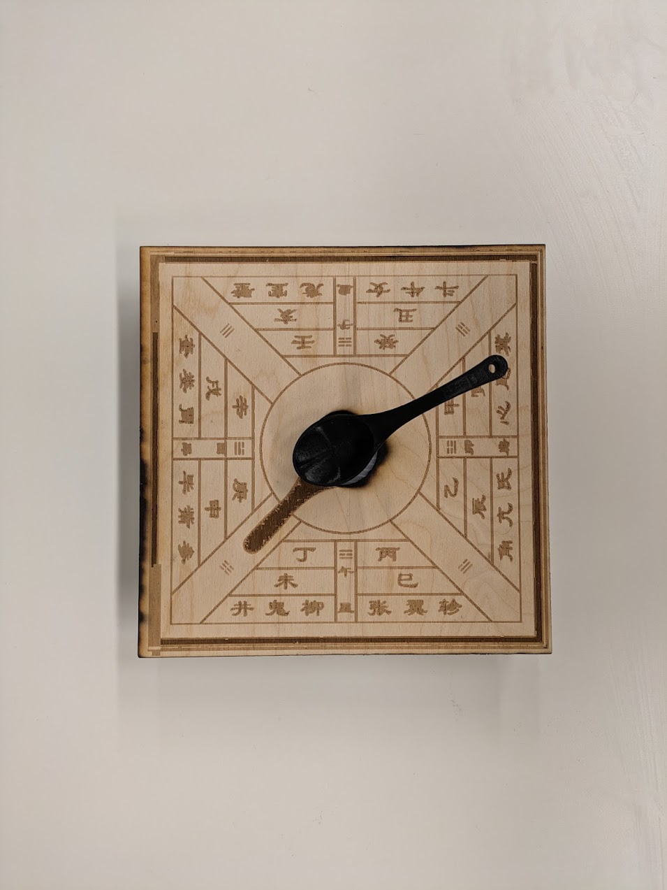

Introduction
U Compass is a smart reminder device inspired by the ancient Chinese compass, designed to help users stay on track and avoid forgetfulness in their daily routines. The project draws from the concept of spatial memory, allowing users to set reminders by rotating a spoon-like indicator to a specific position. When triggered, the device provides tactile and auditory feedback, ensuring users remember their tasks amidst daily distractions.
This project is a fusion of ancient design and modern technology, exploring themes of memory, direction, and human-machine interaction. It serves as a reminder that even in a fast-paced, technology-driven world, simple and intuitive tools can help us navigate our daily lives.
Keywords:
Arduino,
Interaction,
Spatial Memory,
Smart Reminder
